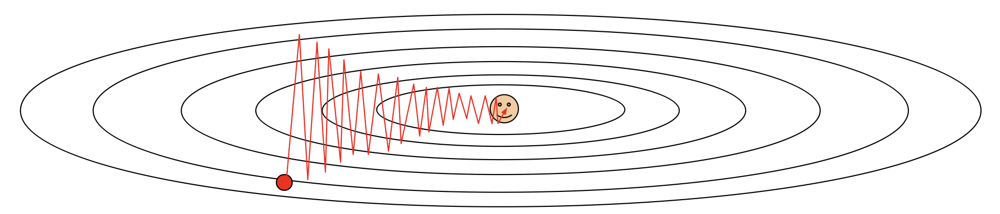
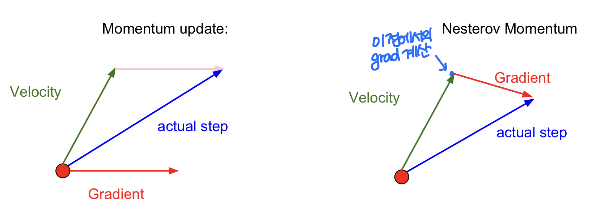
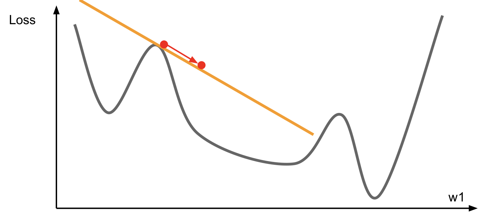
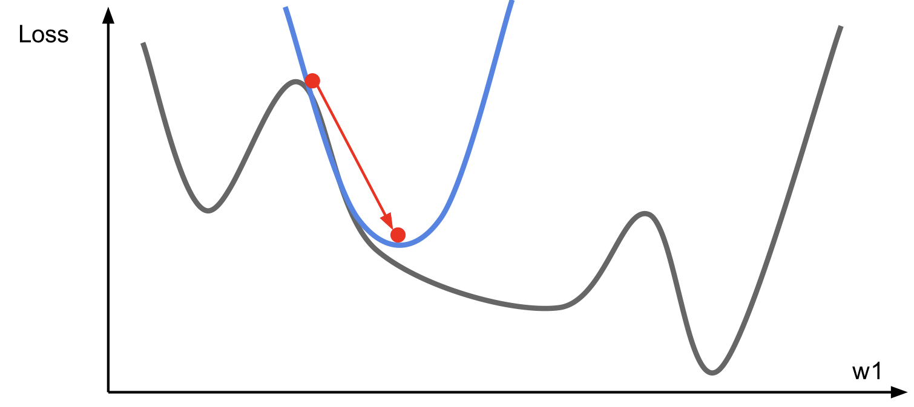
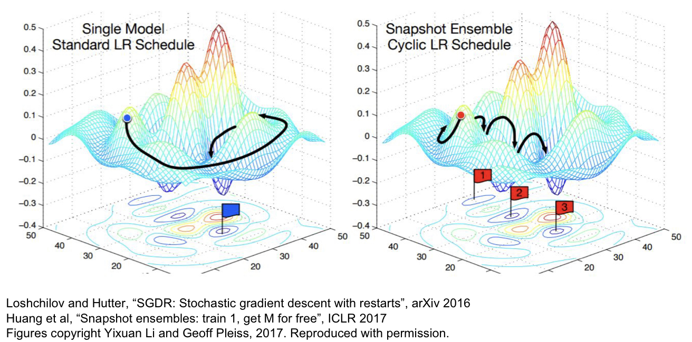
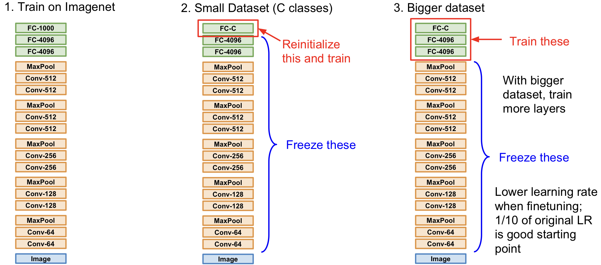
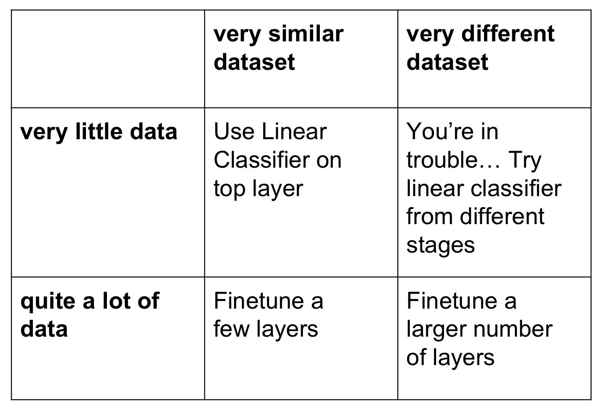

CS231n Lecture7 정리
Lecture 7 : Training Neural Networks, Part II
Neural Network를 train할 때 필요한 Optimization 및 Regularization 기법들, 그리고 Model Ensemble과 Transfer Learning에 대하여 소개한다.
Optimization
SGD보다 나은 optimization 방법들에 대하여 알아본다.
Problems of SGD
1) loss가 한 쪽 방향으로는 빠르게 변하지만 한 쪽 방향으로는 느리게 변한다면?

굉장히 비효율적인 탐색.
2) loss function이 local minima나 saddle point를 가진다면?
Gradient가 작은 지점들이므로, 그 지점에 ‘빠지게’ 된다. (Gradient descent gets stuck). 참고로, high dimension 일수록 saddle point가 매우 흔해진다.
3) gradient가 minibatch 들로부터 계산되므로 굉장히 noisy 할 수 있다.
Momentum

왼쪽 그림과 같이 SGD에 momentum을 도입하는 아이디어가 제시되었다. 오른쪽 그림은 Nesterov Momentum에 관한 그림이다. 식으로 표현하면 다음과 같다:
$x_t$와 $\nabla f(x_t)$ 에 대한 식으로 표현하기 위해서, $\tilde{x}_t = x_t + \rho v_t$ 로 두고 식을 정리하면 아래와 같다.
AdaGrad
AdaGrad는 매 단계에서 각 dimension의 historical sum of squares를 바탕으로 한, gradient의 element-wise scaling을 더하는 것이다. (Added element-wise scaling of the gradient based on the historical sum of squares in each dimension) 이미 많이 변화한 변수들은 optimum에 거의 도달했다고 생각하고 step size를 줄이고, 그렇지 않은 경우는 step size를 크게 하기 위해서이다.
AdaGrad의 문제점은, step size가 점점 작아지기 때문에 stuck 할 수 있다는 것이다.
RMSProp
위의 문제점을 보완하기 위하여, $h$ 값을 계산할 때 decay rate를 준다., 즉, 과거의 정보에 가중치를 작게 부여하고 최근 값에 큰 가중치를 부여한다.
Adam
Adam은 momentum이 있는 RMSProp 이라고 생각할 수 있다. 한 특징은, AdaGrad과 Momentum 방식에서 정의한 $h$, $v$가 최초 0으로 설정되어 학습 초반에 0으로 biased 되는 문제를 해결하였다는 점이다. (초반에 너무 큰 보폭 방지)
$\beta_{1} = 0.9$, $\beta_{2} = 0.999$, $\text{learning rate} = 1e-3 \ \ \text{or} \ \ 5e-4 $ 가 많은 모델의 좋은 starting point라고 한다.
Learning rate decay
위에서 제시한 SGD, SGD + Momentum, AdaGrad, RMSProp, Adam 모두 learning rate를 hyperparameter로 가진다. 이 때, learning rate에 다음과 같은 decay 방식들을 사용해 줄 수 있다.
- step decay : 몇 개의 epoch 마다 얼마 정도(ex. 절반)씩 learning rate를 낮춘다.
- exponential decay : $ \alpha = \alpha_{0} e^{-kt} $
- 1/t decay : $ \alpha = \alpha_{0}/(1+kt) $
learning rate decay는 second-order hyperparamter라 처음부터 optimize할 필요는 없다. 이 효과는 SGD+Momentum에 중요하고, Adam에서는 자주 쓰이지는 않는다.
First-Order Optimization

- Use gradient to form linear approximation
- Step to minimize the approximation
Second-Order Optimization

- Use gradient and Hessian to form quadratic approximation
- Step to the minima of the approximation
Second-Order Optimization은 learning rate이 필요하지 않다는 장점을 가진다. (No hyperparameters) 하지만 Hessian이 $O(N^2)$의 공간복잡도를 가지며 inverting에는 $O(N^3)$의 공간이 필요한 것을 고려하면 딥러닝에서는 적합하지 않다. (N이 1000만~1억 정도임을 고려하라.) 따라서 다음과 같은 방법들로 이를 해결한다.
- Quasi-Newton methods (e.g. BGFS): Hessian을 invert 하지 않고, inverse Hessian을 $O(N^2)$으로 근사하여 사용.
- L-BGFS(Limited memory BGFS): 전체 inverse Hessian을 저장하지 않는다.
L-BGFS는 full batch, deterministic mode에서 굉장히 잘 먹힌다. mini-batch setting에서는 잘 먹히지 않는다.
결과론적으로 대부분의 상황에서 Adam이 좋으며, 만약 full batch update를 할 수 없는 상황이라면 L-BGFS를 고려해 보아라.
Model Ensembles
Model Ensemble이란 여러 개의 model들을 학습시킨 후, test time에서 이 결과들의 평균으로 최종 결정을 하는 기법을 말한다. 극적인 점수 향상보다는 2% 정도의 성능 향상을 기대할 수 있다. 아래는 몇 가지 제시된 팁이다.
- 여러 개의 Independent한 모델을 쓰기보다는, 한 모델을 학습할 때 등장한 여러 snapshot들을 사용해 보아라!
 - Polyak averaging: actual parameter vector를 이용하기보다는 parameter vector의 moving average를 저장했다가 이를 test time에 사용하라.
Regularization
Single-model의 성능을 향상시키기 위해서는 Regularization 작업을 해줄 수 있다. 다양한 Regularization 기법들에 대하여 알아보자.
Add term to loss
가장 흔히 사용되는 L2 regularization은 다음과 같다.
Dropout
Dropout은 각 forward pass마다 random하게 몇 개의 뉴런을 zero로 바꾸어주는 것이다 (비활성화 시키기). 각 뉴런이 비활성화될 확률이 hyperparameter가 되며, 0.5가 가장 많이 쓰인다. 이 방법은 모델로 하여금 예상하지 못한 feature 선정을 강요하여, 각 특징의 co-adaption을 막음으로써 regularization 역할을 해준다. 또한 Dropout을 parameter를 공유하는 large ensemble of model 이라고 해석할 수도 있다. 각 binary mask가 하나의 모델이 되는 것이다.
Dropout을 하게 되면 output이 random하게 나온다. 따라서 test time에서는 randomness를 평균 처리하여 output이 바뀌는 것을 방지한다. 전체 결과를 연산한 후, dropout probability를 곱해주면 된다. Dropout probability에 영향을 받지 않는 prediction code를 만드려면, prediction할 때 probability를 곱하는 대신에 train할 때 각 연산 단게마다 probability로 나누어주면 된다.
Data Augmentation
Horizonatl Flips, Random crops and scales, Color Jitter 등등 다양한 기법을 이용하여 input data를 늘려, 모델의 성능을 향상시킨다.
Transfer Learning
Transfer Learning이란 특정 dataset(e.g. Imagenet)을 대상으로 학습한 model을 가져다가 다른 유사한 문제에 그대로 가져와서 사용하여 학습하는 기법을 말한다.


Transfer Learning은 현재 굉장히 자주 쓰이는 기법임을 알아두자! (특별한게 아니라 쓰는 경우가 더 많다) Train Dataset의 이미지 개수가 1M (백만) 이하라면, transfer learning을 고려해 보자.
CS231n Lecture7 정리
http://yxxshin.github.io/2022/11/15/2022-11-15-CS231n-Lecture7/